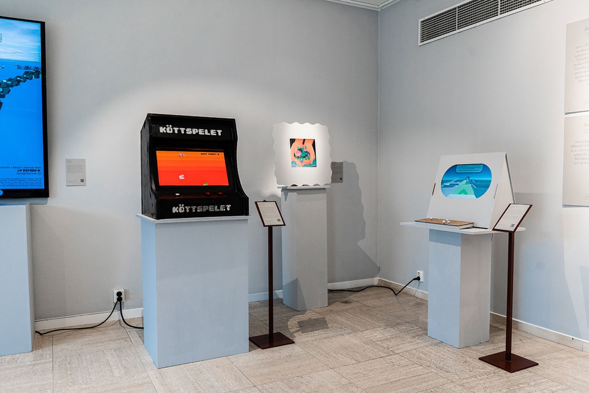
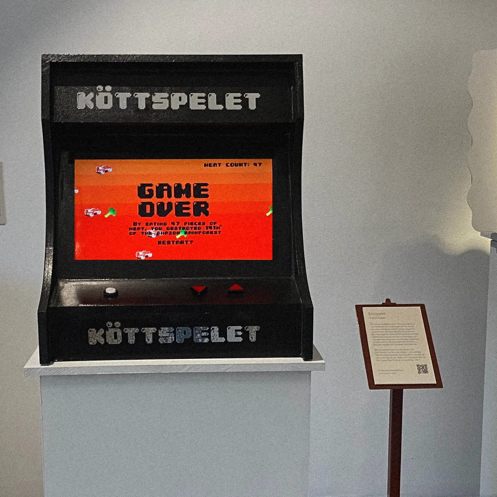
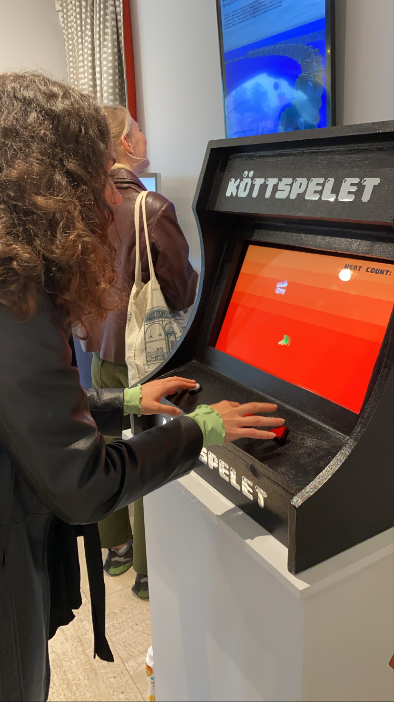
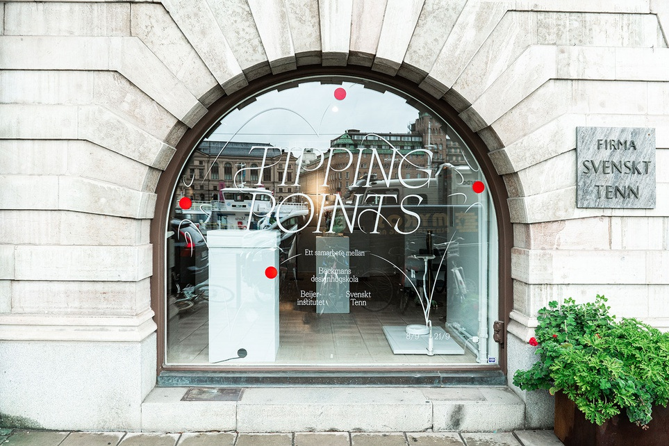
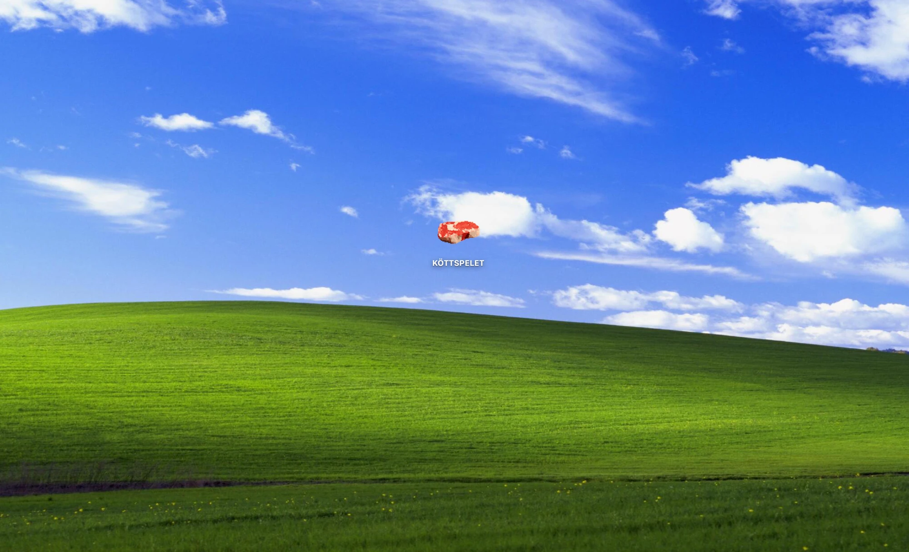

Köttspelet /
The Meat Game – Svenskt Tenn
A satirical arcade game about the irreversible impact of the meat industry on our climate. The goal is simple: eat as many steaks as you can. Eat the broccoli – the plant-based option – and it’s game over.
The final screen then estimates how many square kilometres of Amazon rainforest you destroyed along the way. Not an exact figure, but a pointed one.
Created at Beckmans College of Design and exhibited at Svenskt Tenn as part of Tipping Points (8–21 September 2021), a collaboration between Beckmans College of Design, the Beijer Institute and Svenskt Tenn.
- Client
- Svenskt Tenn
- Year
- 2021
- Context
- Beckmans College of Design
- Role
- Concept, game design and development in Unity, game graphics, Arduino controller, arcade cabinet




